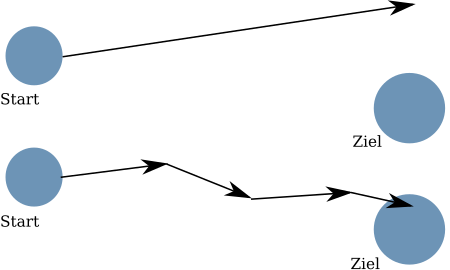
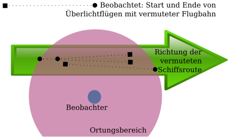

Spieleengine II
Dieser Artikel setzt die unregelmäßige Serie von Gedanken und Ideen rund um die Entwicklung von Spielmechanismen fort. Seit dem ersten Artikel ist längere Zeit vergangen, seither haben sich so viele Gedanken aufgestaut, daß sie wieder einmal geordnet werden müssen...
Nachbereitung
Im letzten Artikel der Serie wurden Gedanken zur Konstruktion der Schiffe geäußert - ich beziehe mich vor allem auf die Aussage, daß Schiffe frei gestaltbar sein sollen. Die verschiedenen Schiffssektionen konsumieren und produzieren verschiedene Ressourcen und ein Schiff kann nur dann fliegen, wenn seine Ressourcenbilanz in allen Bereichen positiv ist.
Dazu kam als Überlegung, die Zufriedenheit der Bevölkerung in die Produktion mit einzubeziehen: Die Zusammenfassung dieser Idee in wenigen Worten ist: Je unzufriedener die Arbeiter, desto schlampiger wird gebaut. Genauere Erklärung: Die Schiffe haben laut Konstruktionsunterlagen Kenndaten zur Ressourcenproduktion und zum Ressourcenverbrauch. Unzufriedene Arbeiter arbeiten ungenau - daher kann es dazu kommen, daß die Teile, aus denen ein Schiff gefertigt wird, weniger Ressourcn produzieren und/oder mehr Ressourcen konsumieren als in den Konstruktionsunterlagen angegeben. Das könnte beispielsweise bedeuten, daß in einem Lagerraum einige Kubikmeter Platz fehlen oder ein Generator nicht so viel MWh liefert, wie auf dem Produktblatt angegeben oder daß die Lebenserhaltungssysteme mehr Strom verbrauchen als ursprünglich angegeben.
Antriebe
Antriebsvariante A
Dieser Antrieb ist überlichtschnell und lässt sich daher zur Bewegung zwischen Sternsystemen innerhalb einer Galaxis einsetzen. Er ist nicht geeignet zum Verkehr zwischen Galaxien. Er hat als Eigenart, daß er als Parameter eine Richtung hat, in der die Bewegung stattfinden soll (einen Rcihtungsvektor) und eine Entfernung, die in dieser Richtung zurückgelegt werden soll (den Betrag des Vektors). Darüber hinaus wird er gekennzeichnet durch einen Fehler. Dieser Fehler ist ein Raumwinkel: Der tatsächliche Richtungsvektor wird mit einer bestimmten Wahrscheinlichkeit um diesen Fehlerwinkel vom ursprünglich festgelegten Richtungsvektor abweichen.
Das bedeutet dann, daß der Fehler bei sonst gleichen Voraussetzungen mit steigender überbrückter Entfernung größer wird:

Oben im Bild ist die Bewegung vom Start zum Ziel innerhalb einer Etappe dargestellt, darunter in mehreren Etappen. Man kann sehr gut sehen, daß der Fehler am Ende der Reise mit der Anzahl der Etappen geringer wird.Man kann die Spielmechanik so ausbauen, daß Ortung und Schiffscomputer den Fehler des Antriebes minimieren können: Je fortschrittlicher beide sind, desto besser kann der Fehler unterdrückt werden. Eventuell kann man zu r Bestimmung des Einflusses dieser Unterdrückung auch den Ausbildungsstand der Mannschaft hinzuziehen.
Es existiert die Idee, den Fehler abhängig von der Sternendichte des durchflogenen Sektors zu modulieren: ist die Sternendichte höher, steigt die Wahrscheinlichkeit des Auftretens von Fehlern und damit die Größe der zu erwartenden Abweichung vom anvisierten Zielpunkt einer Etappe.
Das führt jedoch zur Frage, wie man eine ganze Galaxis modelliert: jeden Stern einzeln zu speichern, wäre ineffizient und auch auf normalen Rechnern undurchführbar. Das ist ein Thema für einen eigenen Artikel...
Kontakt mit anderen Spielern
Zunächst etwas Grundlegendes zu diesem Thema: Das Spiel soll ein Multiplayer-Spiel werden. Daher ist es zwingend notwendig, den Spielern Gelegenheit zu geben, miteinander zu interagieren. Würde man aber vorgehen, wie andere Multiplayer auch - nämlich einfach andere Spieler einzuladen und schon weiß man, wo deren Hauptwelten liegen, so ginge ein wichtiger Forschungsaspekt verloren.
Zusammenarbeit
Stellt man sich hypothetisch vor, daß wir hier auf der Erde die Möglichkeit hätten, überlichtschnell zu kommunizieren: Wir würden eine Botschaft empfangen, die uns einlädt. Dann wäre die Frage: wohin? - Selbst wenn wir die Richtung exakt bestimmen könnten, würden wir die Entfernung nicht kennen.
Daher müsste der Sender uns eine Möglichkeit geben, seinen Standort zu bestimmen. Das könnte zum Beispiel dadurch geschehen, daß er uns mehrere Sterne angibt, und die Winkel, unter denen er sie sehen kann. Damit müsste es möglich sein, seinen Standort zu bestimmen (das müsste man aber schon noch einmal genau prüfen) Ich denke, die generelle Idee dahinter wird klar: Es existiert im Spiel kein (den Spielern bekanntes) globales Koordinatensystem: Jeder Spieler entwickelt ein eigenes, von seiner Heimatwelt ausgehendes (wie wir auf der realen Erde auch).
Vor der Zusammenarbeit mit einem anderen Spieler müssen die beiden Koordinatensysteme ineinander umgerechnet werden. Erst mit diesen gemeinsamen Referenzen, können gemeinsame Aktionen eingeleitet werden. Kein stupides "Gib deine Karte her ich trage alle interessanten Punkte darauf ein!"
Ein interessanter Punkt dabei (auch das ein Aspekt, den ein späterer Artikel analysieren wird): Ist es möglich, die Synchronisierung der Koordinatensysteme durch ein simples "Flieg mir hinterher!" zu erreichen?
Verständigung von Spielern
Es besteht die Möglichkeit, weitere Hürden aufzubauen, die für ein gemeinsames Spiel überwunden werden müssen. Treffen sich zwei Spieler, müssen sie sich verständigen können. Man könnte das Spiel so entwerfen, daß dies nicht automatisch funktioniert, sondern von Vorbedingungen abhängt: So könnten zur Verständigung entweder begabte Linguisten wie Uhura oder ein entsprechender Technologie-Level nötig sein.Damit könnte man auch wieder interessante Rollenspieleffekte einbringen: Ein Volk könnte unter anderem dadurch charakterisiert werden, wie viele Sprachbegabungspunkte es hat und wie schwierig die eigene Sprache ist. Die Verständigung ist nur dann erfolgreich, wenn die eigene Sprachbegabung die Sprachschwierigkeit des Gegenüber übersteigt. Die Sprachbegabung könnte zum Beispiel durch Translatortechnik erhöht werden.
andere Spieler finden
Bei Orientierungsstopps während Reisen mit Raumschiffen, deren Dauer anhängig von der Güte der Bordcomputer und der Ortung ist, kann man - entsprechendes Technologie-Level vorausgesetzt - nach Energiesignaturen für Start und Ende von Etappen anderer Raumschiffe suchen. Liegen beide einer Etappe in Reichweite der Orter, kann man auf die Richtung der Reise schließen. Ortet man mehrere solcher Schiffsbewegungen mit der gleichen oder sehr ähnlichen Richtungen, ist das eine häufig beflogene Route, an deren Enden sich höchstwahrscheinlich Sternenreiche befinden, zu denen Kontakt lohnen könnte.

Beispiel für die Bestimmung der Richtung einer Schiffsroute aus der Interpretation gewonnener Ortungsdaten.Damit ist aber auch klar, daß man selbst, wenn man der Entdeckung entgehen möchte, entweder lange Etappen programmieren sollte oder nicht den direkten Weg fliegen sollte.
Man kann, wenn man von sich aus Kontakt aufnehmen möchte, Sonden mit überlichtschnellem Funk entwickeln und diese aussetzen: Sie senden von sich aus Kontaktanfragen und Nachrichten von möglichen Kontaktpartnern speichern. Entsprechendes Technologie-Level vorausgesetzt, kann die Sonde per Richtfunk "nach Hause telefonieren" und so die gesammelten Kontaktanfragen abgeben. Ressourcenschonender ist es aber, ein Kurierschiff bei den Sonden vorbeifliegen zu lassen und die "Anrufbeantworter" direkt vor Ort abzuhören.
Artikel, die hierher verlinken
Spieleengine V
25.10.2014
Dieser Artikel setzt die unregelmäßige Serie von Gedanken und Ideen rund um die Entwicklung von Spielmechanismen fort. Ich werde hier einige Ideen zur Modellierung einer Galaxie darlegen, die ich schon in einem der früheren Artikel in Aussicht stellte
Spieleengine III
13.03.2014
Dieser Artikel setzt die unregelmäßige Serie von Gedanken und Ideen rund um die Entwicklung von Spielmechanismen fort. Ich werde hier einige Aspekte beleuchten, die bisher noch nicht Thema waren
Tags


Neueste Artikel
-
 Neue Version QBrowser
Neue Version QBrowser
Auf meinem Github-Repository für das Werkzeug zum Arbeiten mit JMS Messaging Brokern hat sich wieder etwas getan...
Weiterlesen... -
Dynamische Gitlab Badges II
In einem früheren Artikel habe ich eine Möglichkeit vorgestellt, echt dynamische Badges für Gitlab zu erstellen. diese Herangehensweise hat aber einen großen Nachteil
Weiterlesen... -
Dynamische Gitlab Badges
In einem früheren Artikel untersuchte ich bereits verschiedene Möglichkeiten, Badges in Gitlab zu erzeugen - allerdings stellte mich die gefundene Lösung noch nicht endgültig zufrieden - bis jetzt...
Weiterlesen...
Manche nennen es Blog, manche Web-Seite - ich schreibe hier hin und wieder über meine Erlebnisse, Rückschläge und Erleuchtungen bei meinen Hobbies.
Wer daran teilhaben und eventuell sogar davon profitieren möchte, muß damit leben, daß ich hin und wieder kleine Ausflüge in Bereiche mache, die nichts mit IT, Administration oder Softwareentwicklung zu tun haben.
Ich wünsche allen Lesern viel Spaß und hin und wieder einen kleinen AHA!-Effekt...
PS: Meine öffentlichen GitHub-Repositories findet man hier.